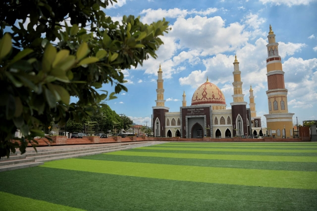
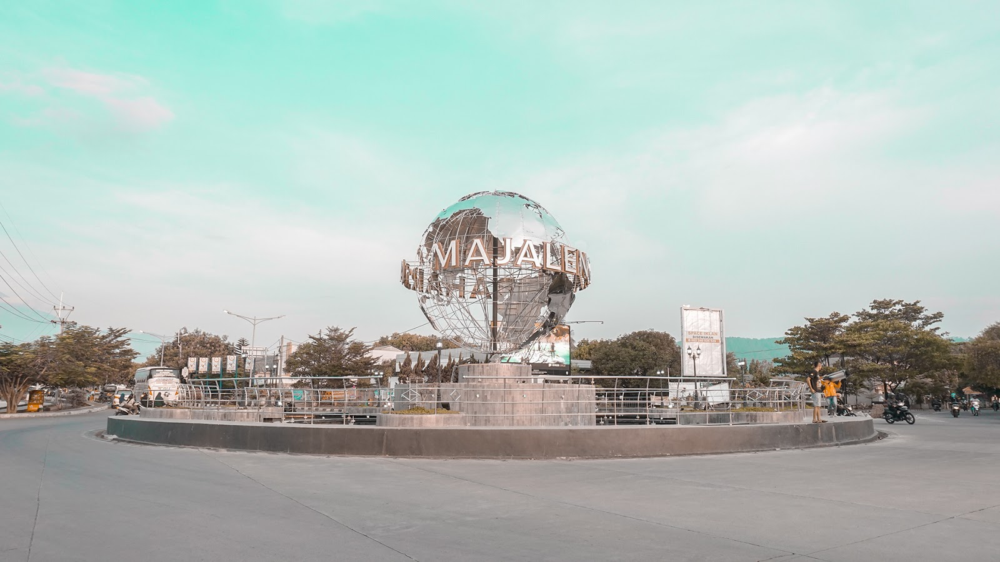
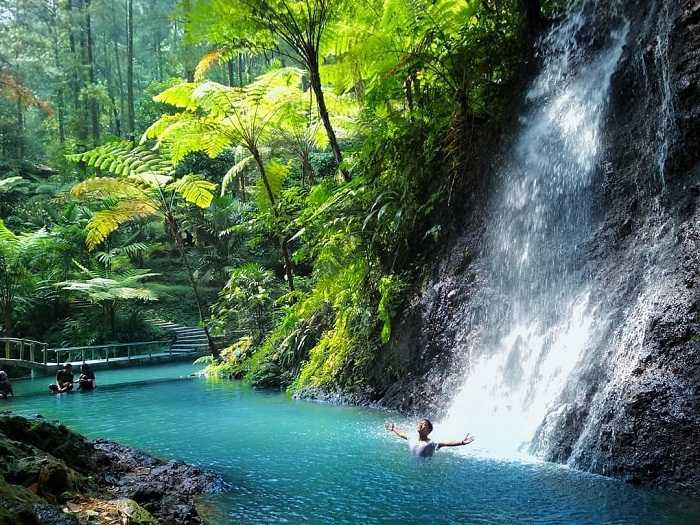
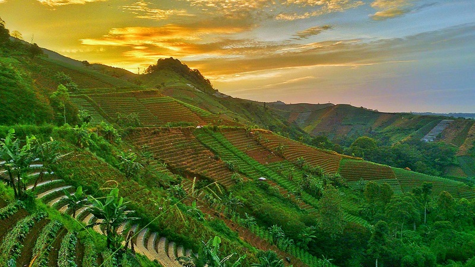
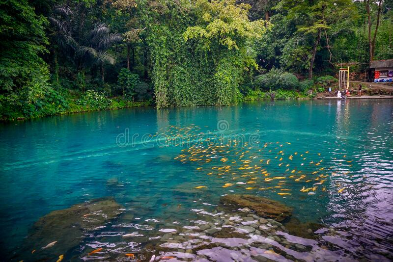

Sejarah
Kabupaten Majalengka adalah sebuah kabupaten di Provinsi Jawa Barat, Indonesia. Awalnya, wilayah ini termasuk dalam wilayah Kabupaten Cirebon. Namun, pada tahun 1811, Belanda menduduki wilayah ini dan membentuk pemerintahan di Majalengka. Pada tahun 1922, Majalengka resmi menjadi sebuah kabupaten yang awalnya terdiri dari 5 kecamatan yaitu Kadipaten, Sindangwangi, Ligung, Jatiwangi, dan Lemahsugih. Selanjutnya, pada tahun 1942, Jepang menduduki Indonesia dan mengubah sistem pemerintahan. Kabupaten Majalengka dijadikan sebagai kawedanan yang dipimpin oleh seorang kepala kawedanan. Setelah Indonesia merdeka, Majalengka kembali menjadi kabupaten dan terus mengalami perkembangan. Pada tahun 2009, Kabupaten Majalengka dimekarkan menjadi 26 kecamatan dan 330 desa/kelurahan. Saat ini, Kabupaten Majalengka terkenal sebagai pusat produksi kerajinan anyaman bambu dan sebagai pusat pertanian. Selain itu, kabupaten ini juga memiliki objek wisata yang menarik seperti Candi Cangkuang dan Curug Cigugur.
Geografis
Kabupaten Majalengka terletak di Provinsi Jawa Barat, Indonesia. Kabupaten ini berada di antara 6°46' - 7°08' Lintang Selatan dan 108°11' - 108°33' Bujur Timur. Kabupaten Majalengka berbatasan dengan Kabupaten Cirebon di sebelah Utara, Kabupaten Kuningan di sebelah Timur, Kabupaten Ciamis di sebelah Selatan, dan Kabupaten Sumedang di sebelah Barat. Luas wilayah Kabupaten Majalengka adalah 1.212,87 km². Terdapat beberapa gunung di Kabupaten Majalengka, yaitu Gunung Ceremai di bagian Timur Kabupaten, Gunung Ciremai di bagian Selatan Kabupaten, dan Gunung Tilu di bagian Barat Kabupaten. Wilayah ini juga dilalui oleh beberapa sungai, seperti Sungai Cimanuk dan Sungai Cisanggarung.
Pariwisata
Kabupaten Majalengka merupakan salah satu daerah di Jawa Barat yang memiliki banyak tempat wisata yang menarik untuk dikunjungi. Berikut ini adalah beberapa objek wisata yang ada di Kabupaten Majalengka:
1. Curug Cipeteuy
Curug Cigugur adalah air terjun yang terletak di kaki Gunung Ceremai. Air terjun ini memiliki ketinggian sekitar 20 meter dan dikelilingi oleh hutan yang hijau dan segar. Pengunjung dapat menikmati pemandangan indah dan menikmati suasana yang tenang di sekitar air terjun.
2. Terasering Panyaweyan
Terasering Panyaweuyan adalah sebuah area persawahan yang dibuat secara terasering atau berundak-undak sehingga memberikan pemandangan yang indah dan menarik. Terdapat jalan setapak yang dibuat di antara teras-teras sawah sehingga pengunjung dapat berjalan dan menikmati pemandangan hijau yang menyejukkan. Selain menikmati pemandangan sawah, pengunjung juga dapat melakukan aktivitas lain seperti berfoto dengan latar belakang pemandangan sawah yang indah atau mengikuti kegiatan pertanian tradisional bersama warga setempat. Di sini juga terdapat warung makan yang menyajikan makanan khas Jawa Barat dan minuman segar.
3. Situ Cipanten
Situ Cipanten adalah sebuah objek wisata dan danau buatan yang terletak di Desa Cipanten, Kecamatan Jatitujuh, Kabupaten Majalengka, Jawa Barat. Danau buatan ini dibuat dengan tujuan untuk mengairi sawah-sawah di sekitar daerah tersebut. Situ Cipanten adalah tempat yang cocok untuk dikunjungi oleh para wisatawan yang mencari ketenangan dan keindahan alam yang menenangkan. Dengan suasana yang sejuk dan nyaman, tempat ini juga cocok untuk digunakan sebagai tempat rekreasi bersama keluarga atau teman-teman.